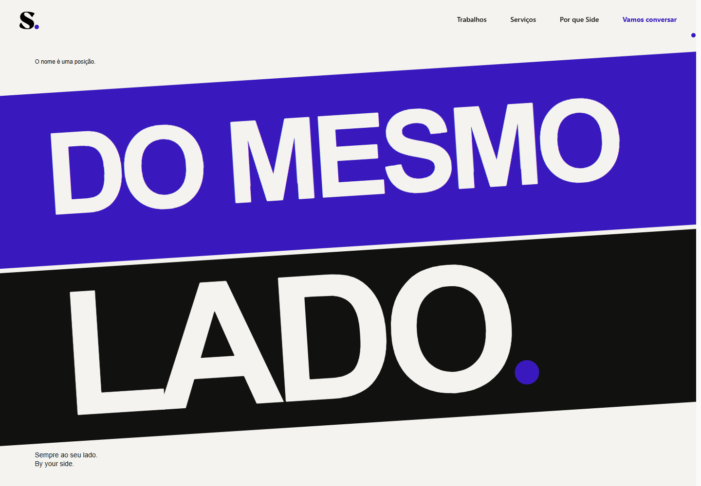
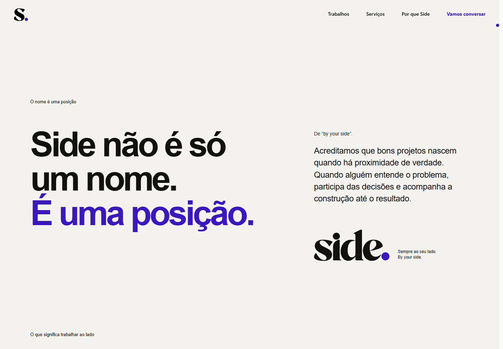
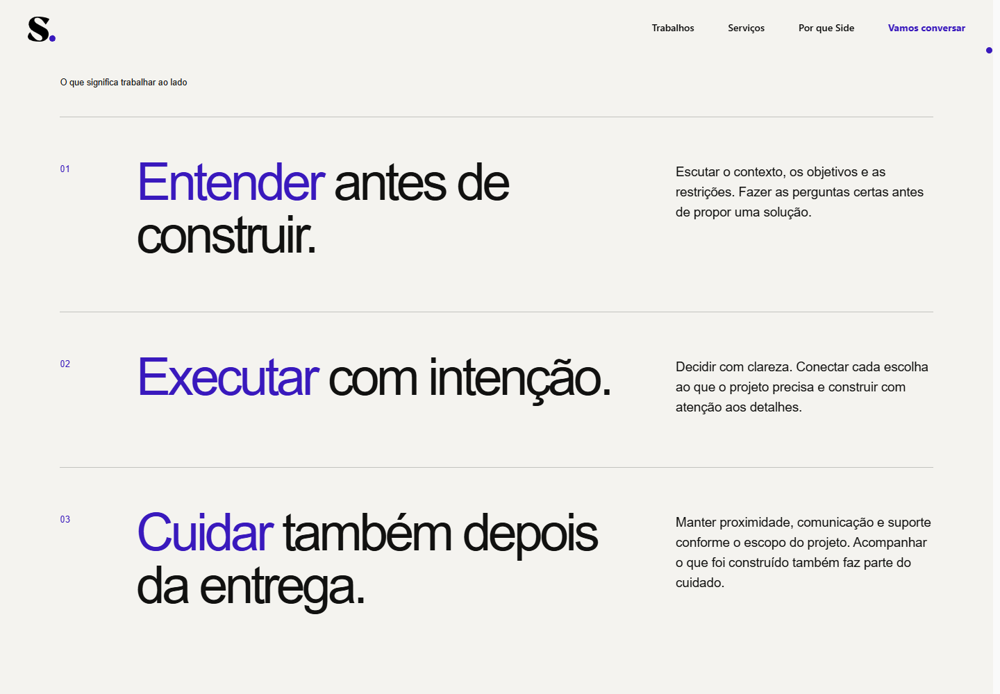
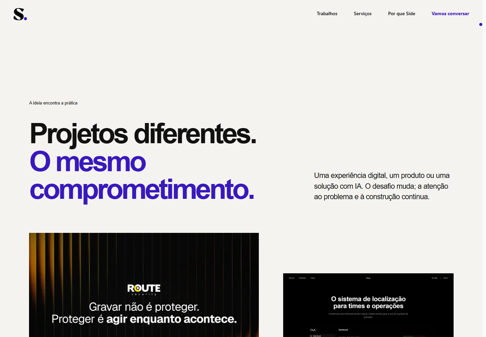
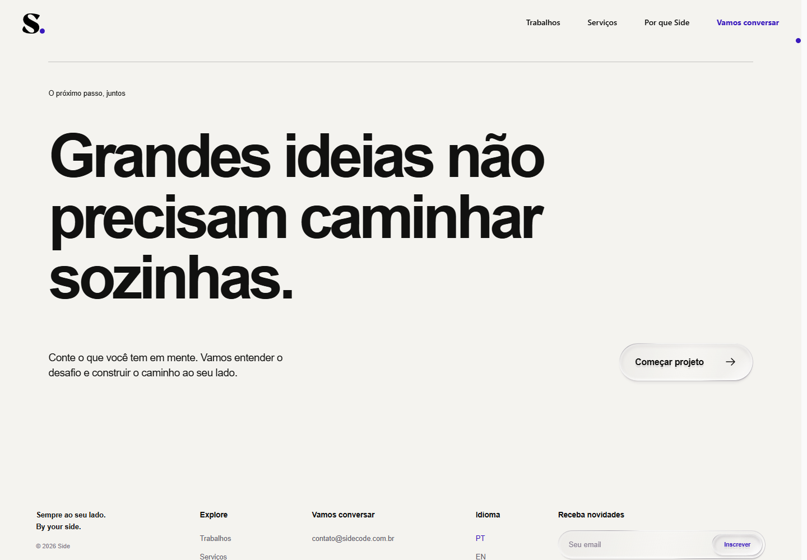

Issue #19 · Página completa · Revisão visual local · 16/10/2026
Não do outro lado.
Do mesmo lado.
A cena aprovada abre o manifesto. Em seguida, o ritmo desacelera para apresentar o significado do nome, os três compromissos, trabalhos reais e o convite para começar um projeto.
Scroll completo · desktop
1440 × 1000 · gravação do navegador com scroll nativo.
Scroll completo · mobile
390 × 844 · composição e leitura próprias.
O eixo comum

O eixo que separava passa a ser compartilhado. A paleta e a remoção dos dois pontos seguem a revisão aprovada.

O nome, a origem e a assinatura.

Entender. Executar. Cuidar.

A ideia encontra a prática.

Um próximo passo claro.
Aguardando aprovação visual final. Alterações mantidas locais; sem push, PR ou publicação.